The marketing site
How My Rider sells the commute
The landing page pitches My Rider to the companies that would sign their staff up: reliability first, then scheduling, then the safety features that matter most on a late shift.
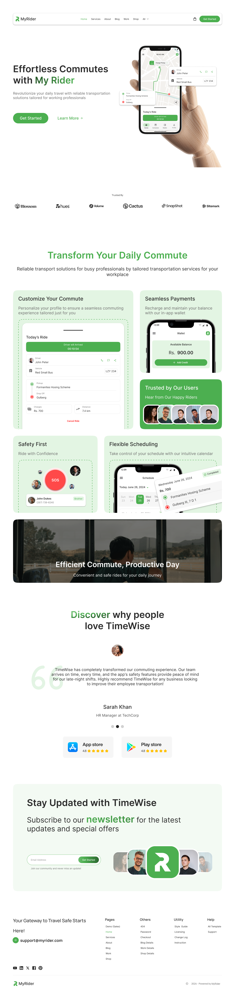
Scroll inside the window ↑
01 · The challenge
Getting to work isn't supposed to be the hard part
My Rider is a scheduled-ride service for companies in Lahore, a fleet of cabs, buses and vans running fixed routes across shifts. Public transport there is unreliable and inflexible, and late shifts add a safety problem on top. This was a two-week solo project: the employee-facing side of the app.
The brief was narrow and clear: design an interface that lets an employee manage a daily commute: set a home location and shift times, schedule and track rides, pay without cash, and get help fast if a ride feels unsafe.
02 · The users
Ayesha's day set the priorities
I started with user interviews and journey mapping, following how employees actually get to and from work across different shifts. One persona-driven story carried the rest of it.
Target audience
Three groups touch My Rider. This project designs for the first one; the other two set constraints.
- Employees: the primary users, commuting daily. They need reliable transport, easy profile management, flexible scheduling, secure payment, and safety.
- HR & administrative staff: coordinate transport for the company. They need administrative control, help with employee setup, oversight of schedules, and finance management.
- Security & safety teams: responsible for employee safety on the commute. They need real-time location monitoring, emergency response, and incident reporting.
Ayesha finishes dinner and opens My Rider. She adjusts her pickup time for the weekend night shift, adds a note for the driver, and checks her wallet balance. Later, mid-ride, something feels off, so she taps SOS and her live location goes straight to her emergency contact.
That one moment decided how much weight the safety feature carried in every screen that followed.
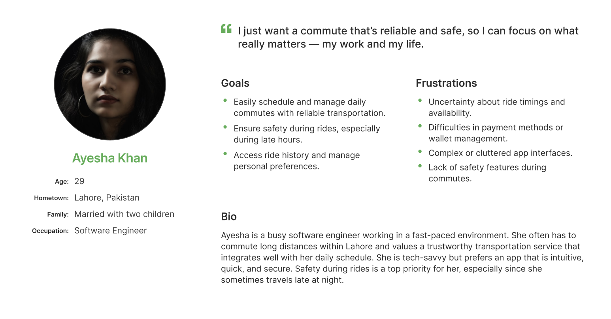
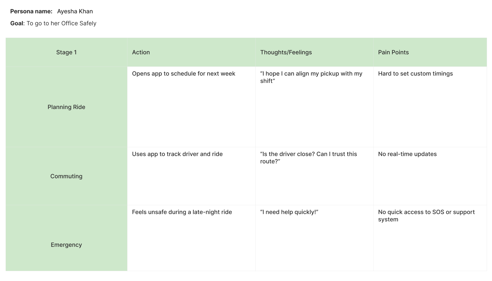
Goals
- Simplify the daily commute with a reliable, scheduled ride system.
- Give users control over home location, shift timings and ride schedules.
- Make safety one tap away, especially on late-night rides, through SOS.
- Remove cash with a seamless in-app wallet.
- Keep navigation obvious with real-time ride information throughout.
03 · Process
Flow, sketches, then the safety call
Mapping the whole journey first
Before any screens, I mapped the full user flow, every path from onboarding through scheduling, tracking, payment and the SOS trigger, so I could see where safety needed to live relative to everything else.
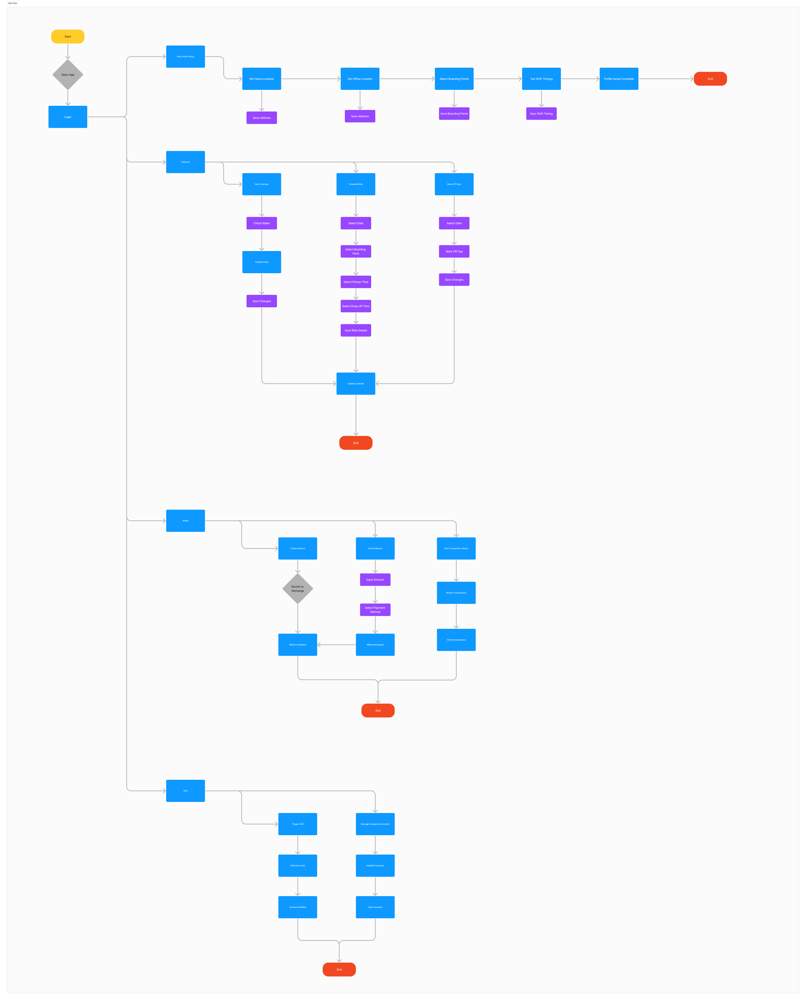
Sketching around Ayesha's pain points
I brainstormed against her four problems (scheduling, real-time tracking, safety, payments), then prioritised: ride tracking and the SOS trigger first for immediate impact, payments and scheduling tools next. Quick sketches and flows kept the app simple before it got detailed.
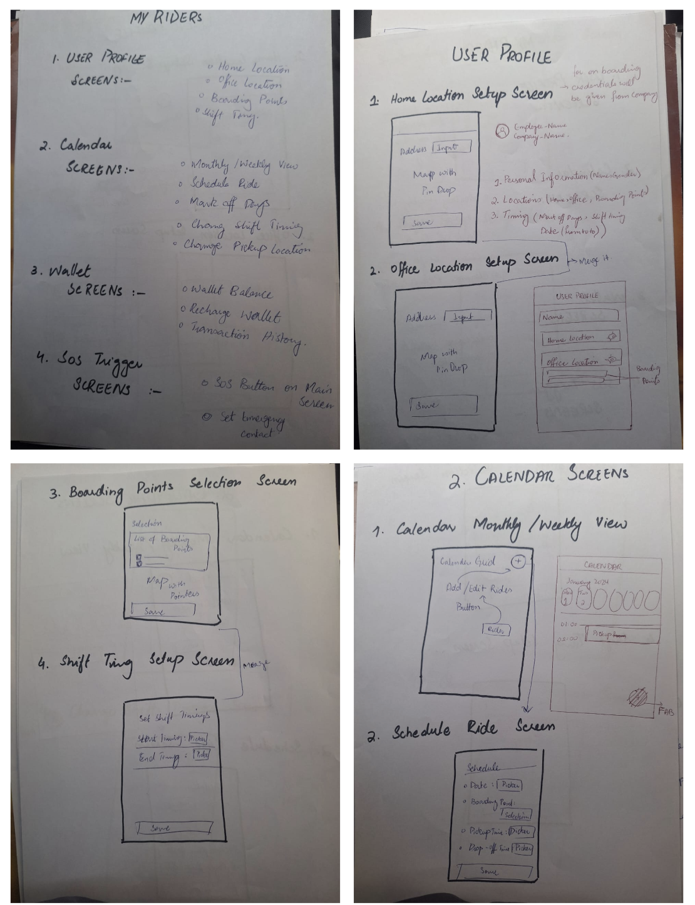
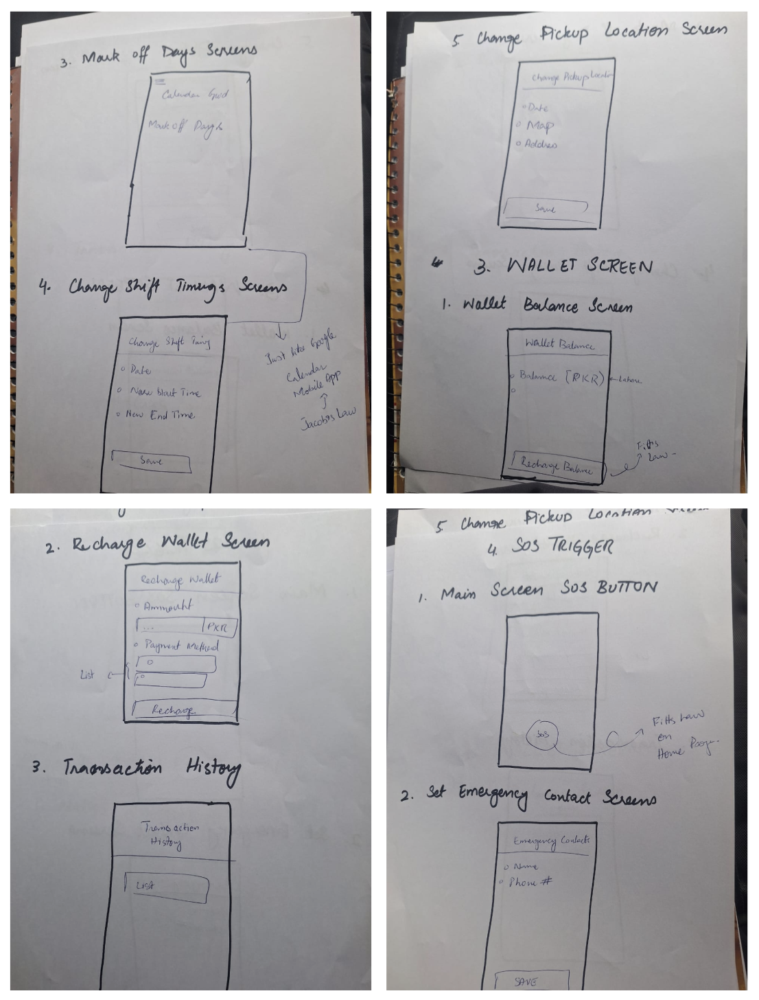
Designing so SOS is never more than a tap away
The key call: rather than treating safety as one feature among many, I built the layout so an SOS trigger was reachable from any screen: home setup, calendar, tracking, wallet. The visual system stayed deliberately quiet (Inter throughout, a small component set) so nothing competed with the one job that mattered most: getting someone home safely.
04 · Style
Quiet on purpose
The interface had to disappear behind the task. One typeface, a tight palette, and a small set of components that repeat, with nothing that draws attention away from a schedule, a route, or an SOS button.
Logo
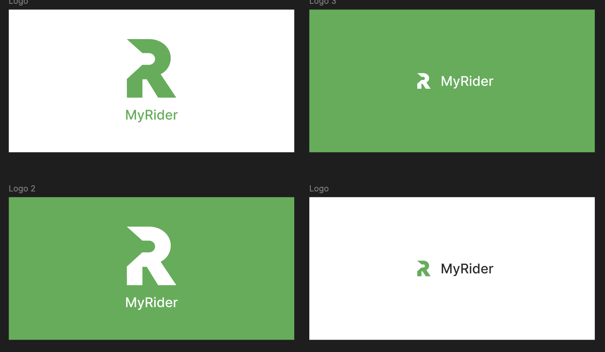
Colour
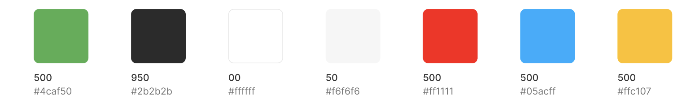
Typography
Inter, used at every size: a plain, highly legible face and nothing decorative on top of it.
Components
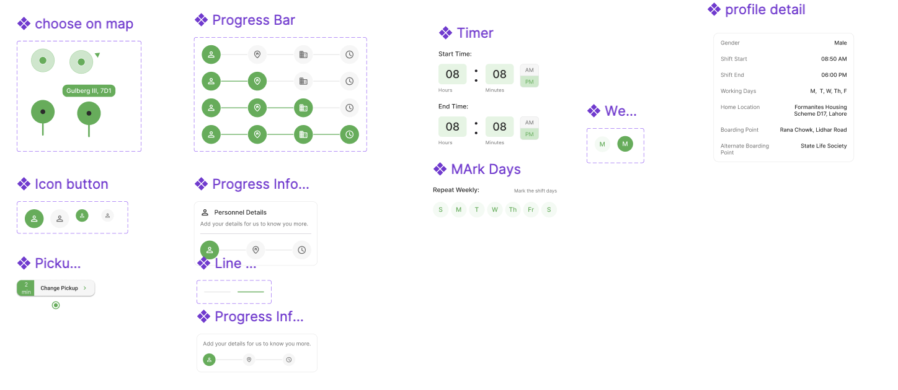
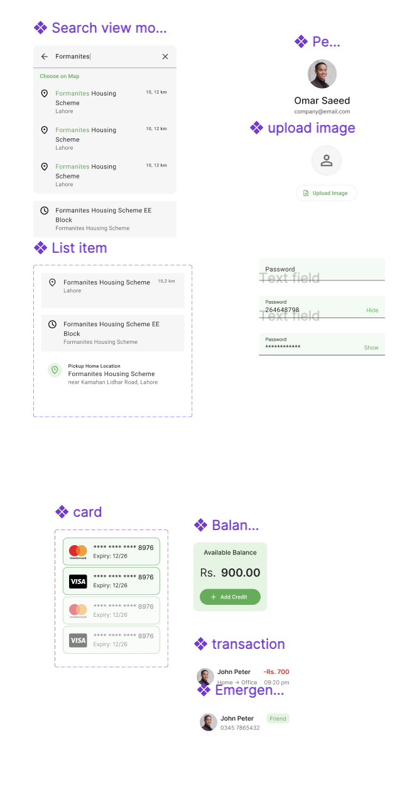
05 · Testing
An A/B test on the profile setup screen
The first screen of onboarding was the one I was least sure about, so I put two versions of it in front of people.
A kept it form-first: a “Personnel Details” card, the three-step progress bar, and Full Name / Gender / Phone number. B dropped the card, cut the phone field (it's already captured at boarding-point setup), and pulled one control up from three screens deep: Enable SOS on the shift end.
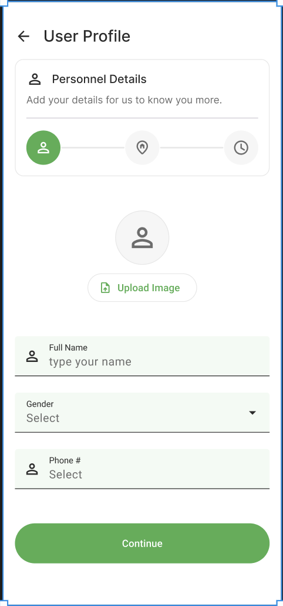
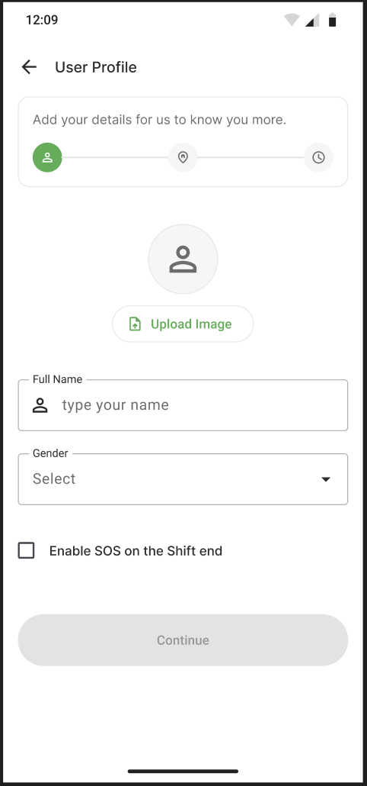
B won. One less field made it quicker to finish, and the real result was that most people enabled shift-end SOS without being prompted, just because the toggle was in front of them. That toggle stayed in onboarding for the final build.
06 · High fidelity
The build, screen by screen
The final UI, module by module. The core loop is short on purpose: see your ride, take it, pay for it, and reach help fast if you need to.
Home & the live ride
The map opens on today's ride with a countdown to pickup and a two-minute window to change the pickup point. Everything else (driver, vehicle, route, fare) is one pull-up away.
The ride in detail
Driver name and photo, vehicle and plate, pickup and drop-off, distance and charge, plus call, message and share. Cancel sits at the bottom, deliberately out of the way.
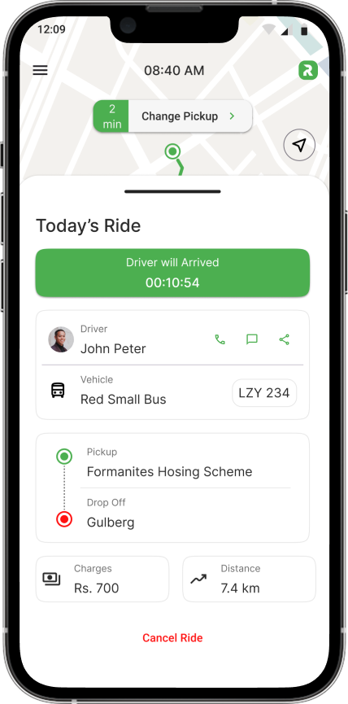
Schedule
A week strip up top, ride cards below, each showing route, fare and status. This is where an employee adjusts pickup times around a changing shift.
Wallet
Balance first, then a single Add Credit action, then history grouped by day. Cashless was a goal from the brief: no fumbling for change with a driver at 6am.
SOS & safety
One screen, one job. Location coordinates at the top, a full-width SOS button in the middle, and the trusted contacts it will reach at the bottom, so there's no doubt about what happens when it's pressed.
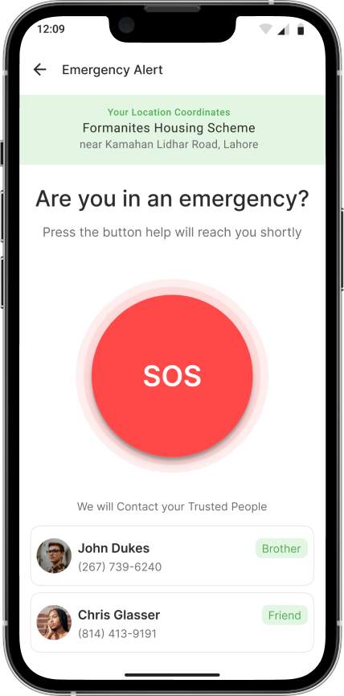
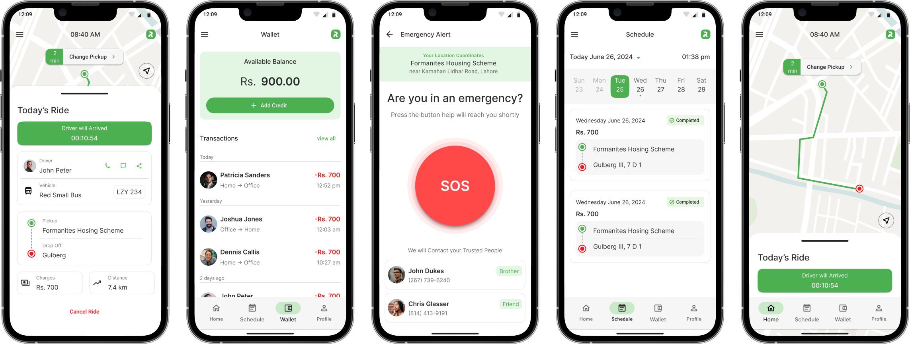
07 · Reflection
What this project taught me
What the solution is meant to deliver:
- A reliable commute: scheduled, optimised rides that get people to work on time.
- Flexible scheduling: pickup points and shift timings the rider controls.
- Safety that's reachable: SOS one tap from anywhere, aimed at women and late-night riders.
- Cashless payments: an in-app wallet instead of handling cash with a driver.
- When one need outweighs the rest, design the layout around it first. Putting SOS everywhere changed how every other screen was built.
- A persona story is only useful if it forces a decision. Ayesha's night ride did; it's why safety got the weight it did.
- A deliberately plain visual system is a choice, not a lack of one, and here it was the point.
- Next time I'd define one measurable target up front, like time to schedule a ride or SOS success rate in testing, so the work has a number to be judged on.